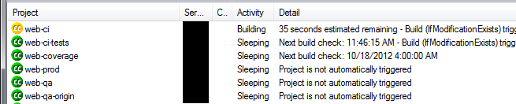

Django on Windows
Michael Manfre

Presenter Notes
This talk will go over how I host a production Django site on windows, some the problems we faced, and decisions we made along the way.
Plenty of time for questions at the end.
Michael Manfre
Developer at Semiconductor Research Corporation ®
Pioneers in research collaboration ™
Maintainer of django-mssql
Django database backend for Microsoft SQL Server
Developer at Brewed By Us, LLC
http://brewedbyus.com - Social home brewing web site to create and share recipes, edit and evolve them, and keep a journal so you can keep a record of your brewing journey.
Manfre LLC
IT consultant and custom software development with various languages and frameworks.
Presenter Notes
Semiconductor Research Corporation ®
"Semiconductor Research Corporation (SRC) is the world's leading technology research consortium. With member companies and university research programs spanning the globe, SRC plays an indispensable part in the R&D strategies of the industry's most influential entities. SRC-sponsored university research is of the highest caliber and creates knowledge breakthroughs that will invent the industries of tomorrow."
Presenter Notes
Web site purpose
- Knowledge transfer
- Publications
- Reporting
- Track research progress
- Member feedback
- Meetings & events
- Student CV and recruitment
Presenter Notes
SRC's current web site

Presenter Notes
Powered By
- Apache
- CruiseControl.net
- Django 1.4.2
- HAProxy (Ubuntu)
- Memcached
- Mercurial (Hg)
- Microsoft SQL Server 2008r2
- nAnt
- PowerShell
- RedGate SQL schema and data compare
- Windows
Presenter Notes
Why Windows?
- Windows shop
- IT knowledge
- Legacy Business Database on MS SQL
- Triggers, user funcs, stored procs, SSIS, SSRS
- Replication not an option (tech limitations and historical business reasons)
- Didn't have a choice
Presenter Notes
Why Django?
- Previous iteration of site was VB6
- ASP.NET workflow is a bit slower and heavier
- Faster prototyping
- Possibly more reasons, but decision made before I was hired
Presenter Notes
Why SQL Server?
- Legacy business database
- Avoid extra database replication services
- SQL Server (master) <--> OpenVMS --> SQL Server (www)
- SSIS jobs pump data from www to OpenVMS and master
Presenter Notes
Secondary factors against Django supported database. Oracle: Price; Postgresql: Needed Cygwin; MySQL: Feature limited;
SQL Server database backends
django-pyodbc
- Cross platform
- Any ODBC connection
- Missing datatypes and SQL Server specific features
- Django 1.4 fork by Alex Vidal - https://github.com/avidal/django-pyodbc
django-mssql
- Windows only
- SQL server specific
- Supports more datatypes and server features
- Supports Django 1.2 - 1.5
- http://bitbucket.org/Manfre/django-mssql/
Presenter Notes
Future of Django-mssql
- Will maintain support for any Django version still supported with security patches
- Support Python 3
- 100% Pass Django test suite by Django 1.6
- Currently 13 failures, 13 errors
- Improve performance
- MSSQL sugar
- raw_callproc
- Continue to improve documentation
Presenter Notes
HTTP server choices
Three main questions
- Can it run as a service without extra tools?
- Does it have any known issues that impact the project? (they all have issues)
- Is the windows build actively maintained and supported?
On Windows...
| Server | Runs as Service | Known Issues | Actively Supported |
|---|---|---|---|
| Apache | Yes | No | Yes |
| IIS | Yes | No [1] | Yes |
| nginx | No | Yes [2] | Yes |
| Lighttpd | Yes | Yes [3] | No |
| [1] | Difficulty with automated build enviroment caused by changes between the various versions of IIS. Each OS and sometimes service pack provides a different IIS version. |
| [2] | Orphans worker processes. |
| [3] | Several documented issues in release notes at time of evaluation in 2009-2010. Windows build no longer actively maintained. |
Presenter Notes
Apache on Windows
- Actively maintained
- Lots of features
- Can proxy if HAProxy or other option not available
- More resource heavy than other options
- MPM: mpm_winnt
- One process, many threads
- mod_wsgi
- Module adds WSGI support for Apache. Daemon mode not supported on Windows.
- http://code.google.com/p/modwsgi/
LoadModule wsgi_module "D:/web/modules/mod_wsgi-win32-ap22py26-3.3.so"
<IfModule wsgi_module>
WSGIScriptAlias / "D:/web/@SERVER_NAME@.wsgi"
WSGIPassAuthorization On
</IfModule>
Presenter Notes
Useful Apache Modules
mod_rpaf
Fixes client IP for Apache sitting behind one or more trusted proxies.
LoadModule log_rotate_module "D:/web/modules/mod_log_rotate.so"
<IfModule rpaf_module>
RPAFenable On
RPAFsethostname On
# localhost lb1.src.org lb2.src.org
RPAFproxy_ips 127.0.0.1 192.168.1.10 10.10.10.10
RPAFheader X-Forwarded-For
</IfModule>
mod_xsendfile
Serve files gated by Django.
LoadModule xsendfile_module "D:/web/modules/mod_xsendfile.so"
<IfModule xsendfile_module>
XSendFile on
XSendFilePath "E:/"
XSendFilePath "//file_server/unc/path"
XSendFileIgnoreLastModified on
XSendFileIgnoreEtag on
</IfModule>
Presenter Notes
Understanding the GIL
- Most pages have lots of IO
- Network (Request/Response)
- Cache
- Database
- Disk (Templates)
- "Understanding the GIL" - David Beazley http://www.dabeaz.com/GIL/
- Threads release their lock when blocking for IO
- Dear SRC,
- Congratulations on launching your new site. Sorry it buckled under non-peak load.
- Sincerely,
- Global Interpreter Lock
Presenter Notes
Faking Process Based MPM
Web farm on a box
- Load balancing Apache instance
- HAProxy is a better option
- N-worker instances
- When worker crashes, site is still online
- Configuration is ready to scale

Presenter Notes
Load balancing Apache instance
Basic balancer config
<Proxy balancer://cluster>
BalancerMember http://192.168.1.100:9001 smax=3 max=10 ttl=120 route=www_1
BalancerMember http://192.168.1.100:9002 smax=3 max=10 ttl=120 route=www_2
BalancerMember http://192.168.1.100:9003 smax=3 max=10 ttl=120 route=www_3
</Proxy>
ProxyPass / balancer://cluster/
ProxyPassReverse / balancer://cluster/
- Serves static files
- Responsible for web logs
- mod_proxy modules have been known to leak memory
- SSL endpoint
- Rewrite rules
Presenter Notes
Apache worker instances
Configure to behave like a WSGI daemon
- Apache balancer should handle everything not needed by Django project
Disable logging
LogFormat " " empty # Below will never output anything, but it will create an empty file CustomLog "D:/logs/carme/apache/access-1.log" empty env=NOTHING_IS_LOGGED
If using HAProxy
- Include rewrite rules
- Add a stand alone instance for static content
Presenter Notes
Build and Deploy

- CruiseControl.net - http://www.cruisecontrolnet.org/
- nAnt - http://nant.sourceforge.net
- psexec for remote execution
- RedGate SQL Schema Compare
Presenter Notes
Virtualenv
- Always create virtualenv with --system-site-packages due to pywin32
- Many DLL python packages will not install properly in to a virtualenv.
virtualenv env --system-site-packages
- pywin32 installer issues with some version.
- Only install for one python version on a machine
Presenter Notes
Virtualenv Wrapper
virtualenvwrapper-win
Windows port of virtualenvwrapper. http://www.doughellmann.com/projects/virtualenvwrapper/
Install
pip install virtualenvwrapper virtualenvwrapper-win
Create virtualenv
mkvirtualenv myproject --system-site-packages
Switch virtualenv
C:\> workon myproject (myproject) C:\>
Leave virtualenv
(myproject) C:\> deactivate C:\>
Presenter Notes
Unit Tests
Test actual schema or fake logic?
- Computed Fields
- Stored Procedures
- Triggers
- Views
Custom create_test_db management command
> python manage.py create_test_db Bouncing database test_db_name Dropping database test_db_name Creating database test_db_name Finding Files: <path pattern> Reading File: <file-1> Reading File: <file-n> ... repeats previous Finding and Reading many times ... Loading Seed Data
Presenter Notes
Django-mssql TEST_CREATE Setting
test_settings.py
DATABASES = { 'default': { 'NAME': 'test_db_name', 'HOST': r'servername\ss2008', 'TEST_NAME': 'test_db_name', 'TEST_CREATE': False, } }
Run tests normally
> python manage.py test Creating test database for alias 'default'... Skipping Test DB creation ... OK Destroying test database for alias 'default'... Skipping Test DB destruction
Presenter Notes
Questions And Feedback
Michael Manfre
- Twitter: @manfre
- BitBucket: https://bitbucket.com/Manfre/
- Github: https://github.com/manfre/
- Freenode: manfre
- Slides: http://manfre.github.com/django-on-windows-talk/